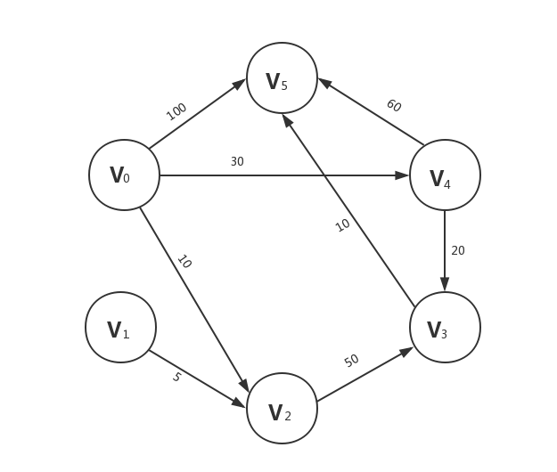

看了好几天书才把Dijkstra算法看明白，今天就记录一下整个过程，顺便给出C语言实现代码。
Dijkstra算法介绍
Dijkstra算法是解决有权(权不能为负数)有向图最短路径问题的算法。
它基于贪心和广度优先搜素的思想。
(感觉还有一点动态规划的意味~)
Dijkstra算法思想
书中原文为“假设S为以求得最短路径的终点的集合，下一条最短路径(设其终点为x)或者是弧(v,x)或者是中间只经过S中的顶点而最后到达顶点x的路径”
翻译一下。假设有三个点A(起点),B(已知A->B存在最短路径，忽略其是怎样到达的)，C(未知)。则A->C的最短路径要么是A->C要么是A->B->C。这里我们隐藏了无法到达的情况(如果无法到达那么最短路径就为无穷大，即把所有路都看成通路)。
所有顶点组成集合V，集合S为求出最短路径的顶点所组成的集合。刚开始时S集合只有起点$v_0$
首先从起点开始向外层遍历。从V-S集合中找出权值最小的顶点加入到S里(贪心，只要局部最优)，并更新最短路径值(我们需要看看新加入的顶点是否可以到达其他顶点并且看看通过该顶点到达其他点的路径长度是否比源点直接到达短，如果是就执行更新操作)，重复操作直至S中有V的全部元素(广度搜索)。此时S-V为空集。
实例理解
本题是清华大学教材严蔚敏数据结构$P_{188}$页例题
我一直没搞懂她伪代码里最短路径P[v]的意义
今天查了很多资料，又实现了一遍终于弄懂了

邻接矩阵为
第一次遍历我们找出各点距离原点的距离(直接到达)分别是
于是我们可以发现直达的情况下，只有v2距离原点最近，因此v2与原点直达为最短路径，将v2加入S集。
第二次遍历我们找出各点距离原点的距离(直达或者通过v2)分别是
(60小于$\infty$,做更新操作)原点到v3经过v2更短，因此v3与原点的最短路径为通过v2，将v3加入S集
于是照着这个规律，将所有的顶点都加入S集，就可以得到原点到各顶点的最短路径了。
再解释一下path[v]是什么意思。
path[v]存储的数据为顶点的位置比如path[3]=2,它的意思就是顶点v0到v3的最后一步为v2->v3，通过递推(path[2]=-1代表v0,v2直达)就可以得到整个完整路径。所以仅需要一个一维数组就能记录下整个图的完整最短路径。
代码实现
1
2
3
4
5
6
7
8
9
10
11
12
13
14
15
16
17
18
19
20
21
22
23
24
25
26
27
28
29
30
31
32
33
34
35
36
37
38
39
40
41
42
43
44
45
46
47
48
49
50
51
52
53
54
55
56
57
58
59
60
61
62
63
64
65
66
67
68
69
70
71
72
73
74
75
76
77
78
79
80
81
82
83
84
85
86
87
| #include <stdio.h>
#include <string.h>
#define INF 1<<29
#define MAX 6
int Graph[MAX][MAX];
int path[MAX];
int vis[MAX];
int spend[MAX];
void init(int border){
int i,j;
int a,b,c;
for(i=0;i<MAX;i++){
path[i]=-1;
vis[i] = 0;
for(j=0;j<MAX;j++){
Graph[i][j] = INF;
}
}
for(i=0;i<border;i++){
scanf("%d%d%d",&a,&b,&c);
Graph[a][b]=c;
}
}
void Dijkstra(int vertex){
int min;
int i,j,k;
for(i=0;i<MAX;i++){
spend[i]=Graph[vertex][i];
}
for(i=0;i<MAX;i++){
if(i==vertex) continue;
min = INF;
for(j=0;j<MAX;j++){
if(!vis[j]&&spend[j]<min){
k = j;
min = spend[j];
}
}
vis[k] = 1;
for(j=0;j<MAX;j++){
if(!vis[j]&&(min+Graph[k][j]<spend[j])){
spend[j] = min+Graph[k][j];
path[j] = k;
}
}
}
}
void print(int vertex){
int i,j,count;
int output[MAX];
for(i=0;i<MAX;i++){
if(i==vertex) continue;
if(spend[i]!=INF){
printf("%d到达%d所花费的代价是%d ",vertex,i,spend[i]);
count = 0 ;
j = i;
while(path[j]!=-1){
output[count] = path[j];
j = path[j];
count++;
}
printf("路径为: %d ",vertex);
for(j = 0;j<count;j++){
printf("%d ",output[j]);
}
printf("%d\n",i);
}
else{
printf("Sorry!无法到达\n");
}
}
}
int main(){
int border;
scanf("%d",&border);
init(border);
int vertex;
scanf("%d",&vertex);
vis[vertex]=1;
Dijkstra(vertex);
print(vertex);
return 0;
}
|
1
2
3
4
5
6
7
8
9
10
| 8
0 2 10
0 4 30
0 5 100
1 2 5
2 3 50
3 5 10
4 3 20
4 5 60
0
|
1
2
3
4
5
| Sorry!无法到达
0到达2所花费的代价是10 路径为: 0 2
0到达3所花费的代价是50 路径为: 0 4 3
0到达4所花费的代价是30 路径为: 0 4
0到达5所花费的代价是60 路径为: 0 3 4 5
|